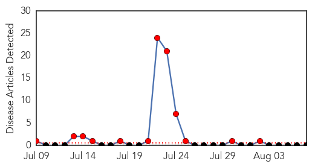

Bubonic Plague
30-Day Web Trend
12 alerts, 0 warnings

30-Day Twitter Trend
0 alerts, 0 warnings

Article Locations

Article Confidences

Top Articles:
-
No articles found for Aug 07, 2014
Top Tweets:
-
No tweets found for Aug 07, 2014
Ebola
30-Day Web Trend
15 alerts, 1 warnings

30-Day Twitter Trend
11 alerts, 0 warnings

Article Locations

Article Confidences

Top Articles:
- 1.000
- CDC issues highest-level alert for Ebola
- 1.000
- CDC issues highest-level alert for Ebola
- 1.000
- Saudi Arabia advises against W. Africa travel over Ebola
- 1.000
- EBOLA VIRUS: Bahamians are warned of West African travel
- 1.000
- In West Africa, top UN health official unveils $100 million Ebola response plan
- 1.000
- Experts warn Australian hospitals not to forget other diseases during Ebola alert
- 1.000
- Ebola's spread to US is 'inevitable' says health chief
- 1.000
- Liberia Grapples With Ebola Outbreak
- 1.000
- U.S. orders diplomats' families to leave Liberia as Ebola spreads
- 1.000
- West African Healthcare Systems Reel as Ebola Toll Hits 932
- 1.000
- West African healthcare reels as Ebola toll hits 932
- 1.000
- CDC ramps up Ebola response
- 1.000
- What Happens When One Of The World’s Deadliest Viruses Invades Your Immune System
- 1.000
- Health official downplays hopes for experimental Ebola drugs
- 1.000
- West African officials seek help as Ebola outbreak worsens
- 1.000
- CDC issues highest-level alert for Ebola
- 1.000
- Frightened Ebola patients running away
- 1.000
- Ebola Outbreak Is ‘A Threat Against Humanity’
- 1.000
- West Africa reels as Ebola toll climbs - Africa
- 1.000
- CDC Issues Level 1 Alert Over Ongoing Outbreak
- 1.000
- Ebola virus: Liberia church leaders claim deadly outbreak is 'plague' sent by God for 'homosexualism' and 'immoral acts'
- 1.000
- Ebola death toll surpasses 930 as WHO emergency meeting convenes
- 1.000
- West African healthcare systems reel as Ebola toll hits 932
- 1.000
- Ebola Crisis Shows No Sign of Letting Up
- 1.000
- SADC health ministers call for Ebola action
- 1.000
- As Ebola Spreads in Nigeria, Debate About Experimental Drugs Grows
- 1.000
- What southern Africa is doing to keep Ebola from spreading
- 1.000
- How the Ebola outbreak turned into a racism and responsibility debate
- 1.000
- How does Ebola virus spread and can it be stopped?
- 1.000
- Priest Miguel Parajes becomes first Ebola victim brought to Europe for treatment
- 1.000
- Priest Miguel Parajes becomes first Ebola victim brought to Europe for treatment
- 1.000
- Ebola virus: 9 things to know about the killer disease
- 1.000
- U.S. orders diplomats' families to leave Liberia as Ebola spreads
- 1.000
- Ebola: timeline of a ruthless killer
- 1.000
- Battling Ebola: Working with a Deadly Virus
- 1.000
- Ebola's Spread to U.S. 'Inevitable,' Says CDC Chief
- 1.000
- The Barbados Advocate
- 1.000
- The World On Arirang
- 1.000
- Saudi man suspected of contracting Ebola dies
- 1.000
- State health department issues alert to Alabama hospitals about Ebola virus
- 1.000
- Ebola's spread to US is 'inevitable' says CDC chief
- 1.000
- How does Ebola virus spread and can it be stopped?
- 1.000
- CDC on highest level of alert as Ebola death toll rises
- 1.000
- A worried world watches as Ebola death toll rises; CDC on highest level of alert
- 1.000
- CDC issues highest alert level for Ebola outbreak
- 1.000
- Zim withdraws peacekeepers in Liberia
- 1.000
- SADC takes preventative measures against Ebola
- 1.000
- Liberia declares state of emergency over Ebola virus
- 1.000
- Ebola patient's husband feels 'the comfort of God'
- 1.000
- CDC Issues Highest Alert Response Over Ebola Outbreak « CBS Atlanta
Showing top 50 articles...
Top Tweets:
- 0.828
- RT: ALERT - live now on: CDC director on the ebola outbreak with and
- 0.822
- Our CEO addresses the Ebola outbreak: http://t.co/rqDIrUc3Te
- 0.765
- Malaria is compounding the impact of Ebola. Fear of Ebola is stopping people seek medical attention http://t.co/NuX4mjYm06
- 0.708
- Meanwhile, in affected countries staff still lack basic PPE... RT"@Crof: The exposed Ebola fighters in Sierra Leone http://t.co/xN1vgv6WrC"
- 0.658
- Impending malaria season in W Africa to complicate Ebola outbreak: a 'slow motion disaster': http://t.co/92SSORpAV4
- 0.649
- If you are interested in a terrific book about Ebola and other infectious diseases, Spillover by is outstanding.
- 0.642
- RT: Estimates of reproductive number and effectiveness of control as Ebola epidemic progresses by: http://t.co/S95OS…
- 0.523
- RT: Update on Ebola - Nigerian nurse dies, 5 other confirmed cases in isolation in Lagos. http://t.co/LXneYrI5Xh
- 0.509
- RT: What's needed to fight Ebola is not fancy equipment. What's needed is standard infection control, rigorously applied.